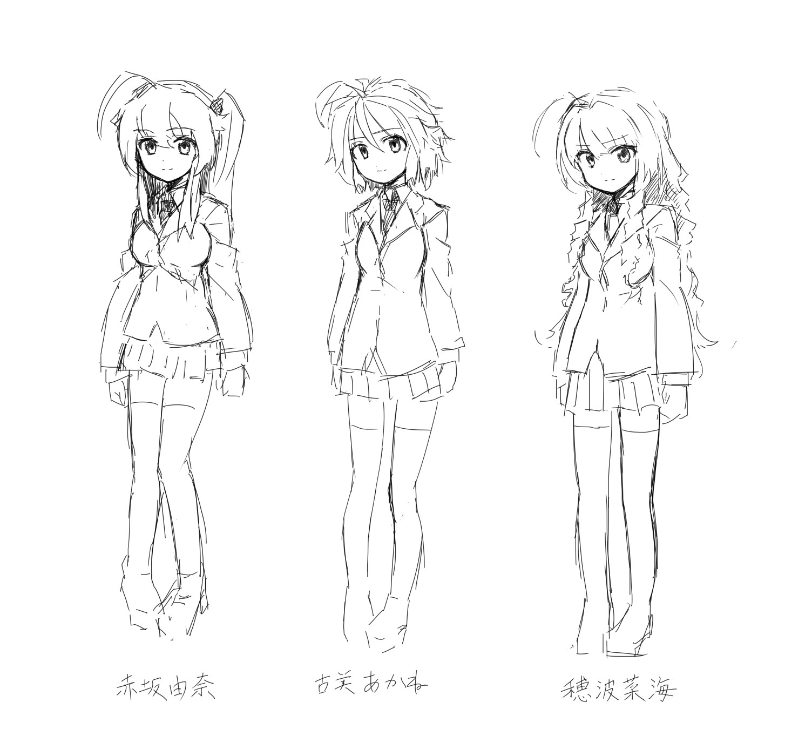

ようこそおーぷんでエロゲ作ろうぜのサイトへ
「おーぷんでエロゲ作ろうぜ」はおーぷん2ちゃんねるのVIP板のスレッドで進行しているオープンソースのAVG開発プロジェクトです。
このプロジェクトはそのスレッドを中心にGitHub上で開発が行われています。プロジェクトの開発の柱はプレイヤー、サイト、Wikiです。
おーぷん2ちゃんねるで、パブリックドメインのアドベンチャーゲームを作ろうという企画から始まったプロジェクトです。 2013年に5月に企画がはじまりました。
SNSで話題にするときは「おーぷんでエロゲ作ろうぜ」のハッシュタグでお願いします。例えばツイッターの場合です。
システム
ウェブ上で作品インストールが可能な高機能ノベルプレイヤー
クリック一つでウェブ上の作品をインストールできるお手軽ノベルプレイヤー
SVG対応でアニメーションも可能
インストールの手間を避けるためプレイヤーはWeb技術によって作られており、最新のモダンブラウザでサイトにアクセスするだけで遊べます。
またブラウザによりコンテンツが隔離されるため、PCに悪影響を及ぼすことなく安心して第三者の作品を楽しむことができます。
キャラクター
応分
名前
{{character.name}}
解説
画像
ストーリー
- 応分
- その他
応分
おうぶ市
一般
R15(※15歳以上対象)
R18(※18歳以上対象)
その他
一般
名前
{{story.name}} インストールする
SS
名前
{{ss.name}}
ギャラリー
- 